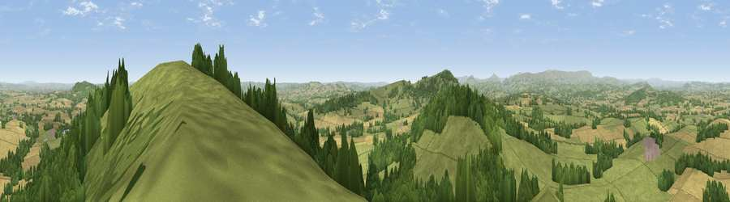

Viewpoint near Orcop Hill
#1309 in England · top 2% of its area beats it · near Orcop HillThe view, rendered

A 360° render of this exact spot computed from the terrain model, tree cover and land cover — summer colours, afternoon light, calibrated against photographs of famous viewpoints. Real trees, hedges and buildings will differ in detail.
The panorama
Grey silhouette: terrain skyline in each direction (720 bearings, Earth curvature and refraction included). Dashed green: skyline with trees (+15 m) and buildings (+8 m) as obstacles. Blue strip: how far the ground is visible on each bearing.
Where the view opens
Wedge length = distance to the farthest visible ground on that bearing (vegetation-aware). Rings at 10, 25 and 50 km.
What fills the view
55% grassland · 24% woodland · 20% cropland ·
Angular shares of the visible panorama (visual magnitude), not map area. Landscape diversity 0.45 (0–1 Shannon).
Key numbers
More beautiful places nearby
The staircase of upgrades: each row has a higher view potential than everything closer. Driving times are estimates from straight-line distance, calibrated against real road routing — check an actual route before setting out.
| Place | Direction | Drive | Score |
|---|---|---|---|
| Viewpoint near Orcop Hill | E · 0 km | ~1 min | 80.7 |
| Garway Hill | SW · 4 km | ~10 min | 84.6 |
| Millennium Hill | ENE · 32 km | ~49 min | 86.9 |
| Worcestershire Beacon | ENE · 35 km | ~53 min | 87.1 |
| Viewpoint near West Quantoxhead | SSW · 92 km | ~117 min | 87.9 |
| Viewpoint near West Quantoxhead | SSW · 93 km | ~117 min | 88.7 |
| Holdstone Hill | SW · 116 km | ~141 min | 90.2 |
| The Knoll | S · 141 km | ~164 min | 91.0 |
51.94991, -2.78238 · source: screening · position refined by local search. Computed location — check access rights before visiting.